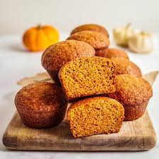

Pumpkin Zucchini Bread

Description
This unique pumpkin zucchini recipe can be a bread or a cake. Source says it's perfect for "When a craving for zucchini bread collides with leftover pumpkin." Preparation time is approximately 20 minutes and bake time 40 minutes. Serves 12.
The nutrition facts listed on the recipe's original site indicate a total of 435 calories, 6.8g protein, 65.1g carbohydrates, 17.2g fat, and 360.9mg of sodium per serving.
Ingredients
- 3 cups all-purpose flour
- 1 1/2 tablespoons pumpkin pie spice
- 1 teaspoon salt
- 1 teaspoon baking soda
- 1 teaspoon baking powder
- 3 eggs
- 2 1/4 cups white sugar
- 1/2 cup vegetable oil
- 1/2 cup canned pumpkin
- 1 tablespoon vanilla extract
- 2 1/2 cups grated zucchini
- 1 cupped chopped walnute (Optional)
Steps
- Preheat oven to 325 degrees F (165 degrees C). Grease and flour 8x8-inch baking dishes.
- Sift flour, pumpkin pie spice, salt, baking soda, and baking powder together in a large bowl.
- Beat eggs, sugar, vegetable oil, pumpkin, and vanilla extract together in a second bowl until mixture is smooth and creamy. Stir wet ingredients into flour mixture until combined; gently fold in zucchini and walnuts. Divide batter into the prepared baking dishes.
- Bake in the preheated oven until cakes are lightly browned and a toothpick inserted into the center comes out clean, 40 to 60 minutes. Allow to cool on rack for 20 minutes before removing from pans to finish cooling.